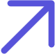
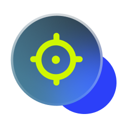

Our Team
The People Behind
Our Crafts
Our Crafts
We’re a team of designers and developers passionate about bringing ideas to life through creativity and precision.
Hi, I’m Finley, I’m 17, and I’m the CEO & Co-Founder of NEXT DESIGN. Prior to starting Next Design I ran a marketing agency for two years, which taught me a lot about business, clients, and what it really takes to help companies grow online. During that time, I realised I wanted to focus on something more specific — combining my love for design with helping businesses succeed online. That’s how I founded NEXT DESIGN.
Show more
At NEXT DESIGN, I handle everything outside of the design and development — from sales and client relationships to strategy and growth. For me, communication is everything. Being clear, honest, and approachable with clients ensures we deliver websites that don’t just look good, but actually help their business grow.
Show more
I genuinely love seeing the impact of our work — helping businesses build an online presence, attract clients, and achieve their goals is what motivates me every day. Being a young entrepreneur gives me a fresh perspective, modern ideas, and a drive to make every project successful.
My goal is for NEXT DESIGN to grow into more than just a web design agency — eventually becoming a full digital partner, helping clients not only with websites, but also with their whole online presence and other online growth tools. At the end of the day, it’s all about helping people and their businesses succeed online, and that’s what keeps me excited about every project we take on.
Show less
Show more
At NEXT DESIGN, I handle everything outside of the design and development — from sales and client relationships to strategy and growth. For me, communication is everything. Being clear, honest, and approachable with clients ensures we deliver websites that don’t just look good, but actually help their business grow.
Show more
I genuinely love seeing the impact of our work — helping businesses build an online presence, attract clients, and achieve their goals is what motivates me every day. Being a young entrepreneur gives me a fresh perspective, modern ideas, and a drive to make every project successful.
My goal is for NEXT DESIGN to grow into more than just a web design agency — eventually becoming a full digital partner, helping clients not only with websites, but also with their whole online presence and other online growth tools. At the end of the day, it’s all about helping people and their businesses succeed online, and that’s what keeps me excited about every project we take on.
Show less
20+
completed
projects

projects

Owen Marceau
CTO & Co-Founder
I am deeply passionate about web design and development, crafting websites that are not only visually clean but also highly functional. Every project I approach is guided by precision and care, reflecting a commitment to excellence and the pursuit of truth in every line of code and interface decision.
Beyond design, I specialize in backend systems, creating efficient and reliable architectures that power complex applications. My work is built on structure, clarity, and faith in God, striving to create websites shaped by creativity, and built with honest craftsmanship, while making sure every solution serves people simply, efficiently, and with integrity at the centre.
Beyond design, I specialize in backend systems, creating efficient and reliable architectures that power complex applications. My work is built on structure, clarity, and faith in God, striving to create websites shaped by creativity, and built with honest craftsmanship, while making sure every solution serves people simply, efficiently, and with integrity at the centre.
owen@nextdesignwebsite.com
Hear Directly From
Those We Serve
Those We Serve
"Great service – efficient, fast, and very professional. Everything was handled smoothly from start to finish. Highly recommend!"

Kristine Teiváne
Beauty Salon Owner & Client

Our Mission
Our mission is to craft websites that combine beauty with technical strength, serving people with clarity and purpose. Guided by honesty, excellence, and truth, every Next Design project becomes a lasting partnership built on growth, and integrity